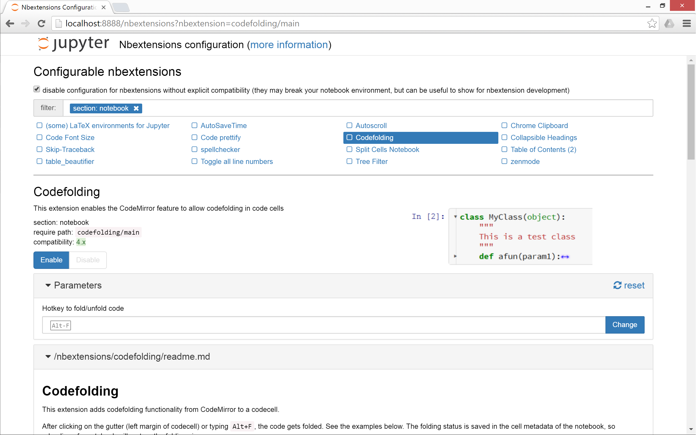

Jupyter Nbextensions Configurator#


A server extension for jupyter notebook which provides configuration interfaces for notebook extensions (nbextensions).
The jupyter_nbextensions_configurator jupyter server extension provides
graphical user interfaces for configuring which nbextensions are enabled
(load automatically for every notebook), and display their readme files.
In addition, for nbextensions which include an appropriate yaml descriptor file
(see below), the interface also provides controls to configure the
nbextensions’ options.
This project was spun out of work from
ipython-contrib/IPython-notebook-extensions.
Usage#
Once jupyter_nbextensions_configurator is installed and enabled, and your
notebook server has been restarted, you should be able to find the nbextensions
configuration interface at the url <base_url>nbextensions, where
<base_url> is described below (for simple installs, it’s usually just /, so
the UI is at /nbextensions).

base_url#
For most single-user notebook servers, the dashboard (the file-browser or ‘tree’ view) is at
http://localhost:8888/tree
So the base_url is the part between the host (http://localhost:8888) and
tree, so in this case it’s the default value of just /.
If you have a non-default base url (such as with JupyterHub), you’ll need to
prepend it to the url. So, if your dashboard is at
http://localhost:8888/custom/base/url/tree
then you’ll find the configurator UI page at
http://localhost:8888/custom/base/url/nbextensions
tree tab#
In addition to the main standalone page, the nbextensions configurator interface is also available as a tab on the dashboard:
The dashboard tab is provided via an nbextension called
“Nbextensions dashboard tab”, with requirejs uri
nbextensions_configurator/tree_tab/main.
Since version 0.2.0, this nbextension is enabled by default on enabling
the jupyter_nbextensions_configurator serverextension, but it can be disabled
as with any other nbextension if you don’t want to use it.
edit menu item#
jupyter_nbextensions_configurator provides a second small nbextension, which
simply adds an item to the notebook-view edit menu, which links to the
configurator UI page:
Similarly to the tree tab nbextension detailed above, since version
0.2.0, the edit menu item nbextension is enabled by default when
enabling the main jupyter_nbextensions_configurator serverextension, but can
be disabled at any time in the same way as other nbextensions.
YAML file format#
You don’t need to know about the yaml files in order simply to use
jupyter_nbextensions_configurator.
An nbextension is ‘found’ by the jupyter_nbextensions_configurator server
extension when a special yaml file describing the nbextension and its options
is found in the notebook server’s nbextensions_path.
The yaml file can have any name with the file extension .yaml or .yml, and
describes the nbextension and its options to
jupyter_nbextensions_configurator.
The case-sensitive keys in the yaml file are as follows:
Type, (required) a case-sensitive identifier, must beIPython Notebook ExtensionorJupyter Notebook ExtensionMain, (required) the main javascript file that is loaded, typicallymain.jsName, the name of the nbextensionSection, which view the nbextension should be loaded in (defaults tonotebook, but can alternatively betree,edit, or to load in all views,common).Description, a short explanation of the nbextensionLink, a URL for more documentation. If this is a relative url with a.mdfile extension (recommended!), the markdown readme is rendered in the configurator UI.Icon, a URL for a small icon for the configurator UI (rendered 120px high, should preferably end up 400px wide. Recall HDPI displays may benefit from a 2x resolution icon).Compatibility, Jupyter major version compatibility, e.g.3.xor4.x,3.x 4.x,3.x, 4.x, 5.xParameters, an optional list of configuration parameters. Each item is a dictionary with (some of) the following keysname, (required) the name used to store the configuration variable in the config json. It follows a json-like structure, so you can use.to separate sub-objects e.g.myextension.buttons_to_add.play.description, a description of the configuration parameterdefault, a default value used to populate the tag in the configurator UI, if no value is found in config. Note that this is more of a hint to the user than anything functional - since it’s only set in the yaml file, the javascript implementing the nbextension in question might actually use a different default, depending on the implementation.input_type, controls the type of html tag used to render the parameter in the configurator UI. Valid values includetext,textarea,checkbox, [html5 input tags such asnumber,url,color, …], plus a final type oflistlist_element, a dictionary with the samedefaultandinput_typekeys as aParametersentry, used to render each element of the list for parameters with input_typelistfinally, extras such as
min,stepandmaxmay be used bynumbertags for validation
tags, a list of string tags describing the nbextension, to allow for filtering
Example:
Type: Jupyter Notebook Extension
Name: Limit Output
Section: notebook
Description: This nbextension limits the number of characters that can be printed below a codecell
tags:
- usability
- limit
- output
Link: readme.md
Icon: icon.png
Main: main.js
Compatibility: 4.x
Parameters:
- name: limit_output
description: Number of characters to limit output to
input_type: number
default: 10000
step: 1
min: 0
- name: limit_output_message
description: Message to append when output is limited
input_type: text
default: '**OUTPUT MUTED**'
Troubleshooting#
If you encounter problems with this server extension, you can:
check the issues page for the github repository. If you can’t find one that fits your problem, please create a new one!
ask in the project’s gitter chatroom
For debugging, useful information can (sometimes) be found by:
Checking for error messages in the browser’s JavaScript console.
Checking for messages in the notebook server’s logs. This is particularly useful when the server is run with the
--debugflag, to get as many logs as possible.